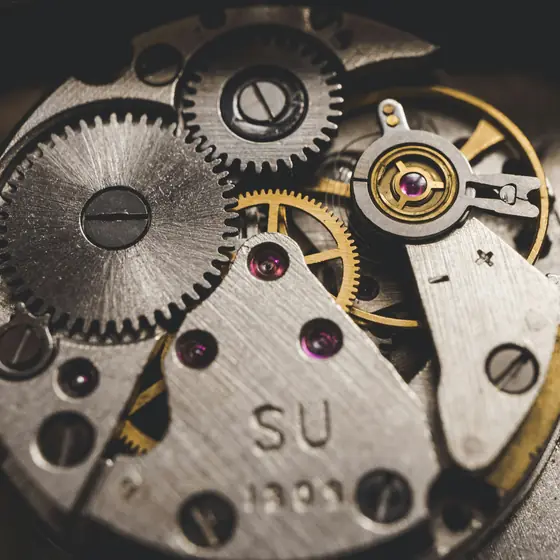
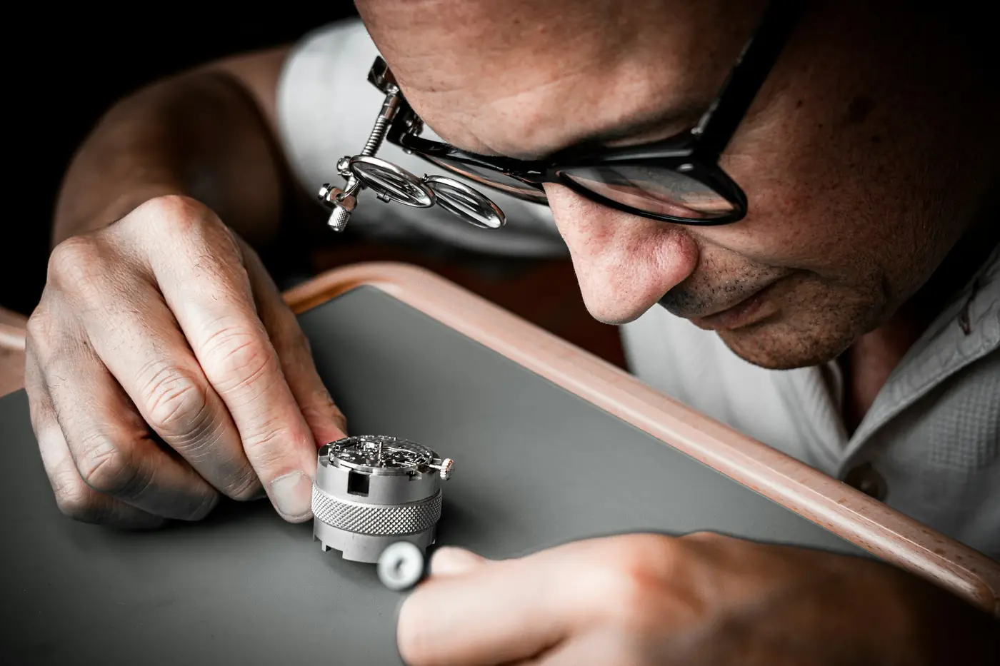
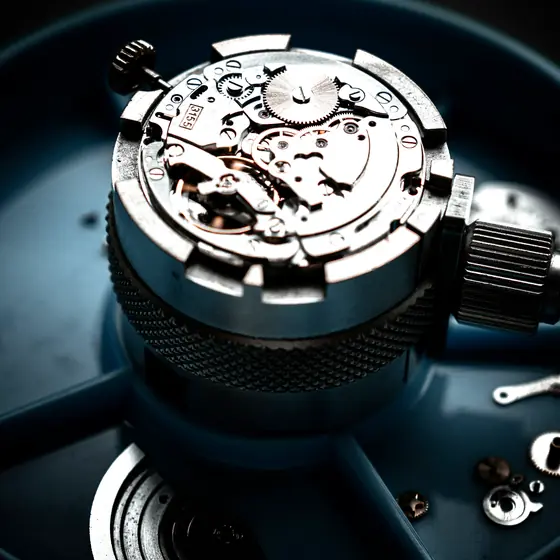
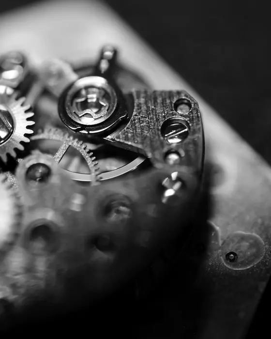
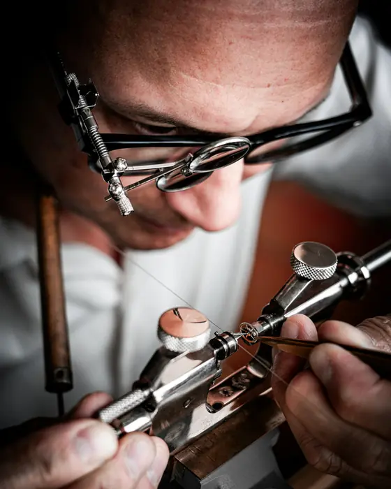
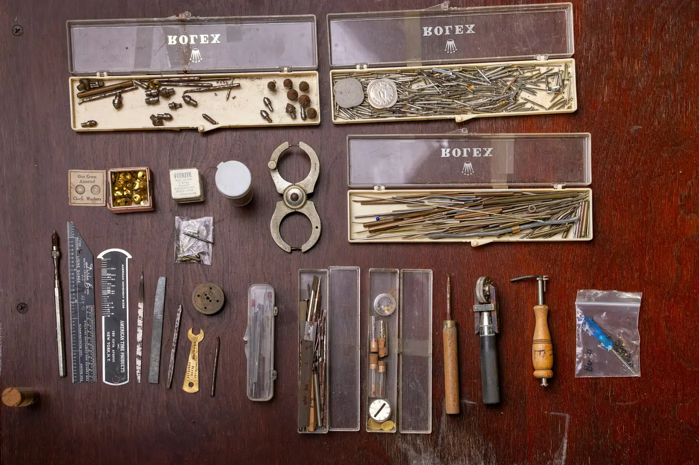

Revisionab 290 € inkl. MwSt.
7 Tage
Gangprüfung nach jeder Revision.
Komplett zerlegt, gereinigt, geölt und reguliert. Mit schriftlichem Messprotokoll und zwei Jahren Gewährleistung auf unsere Arbeit.
Meisterwerkstatt · Peine
Revision, Reparatur und Restaurierung mechanischer Uhren — von Hand, an der eigenen Werkbank.
Die Revision
Gehäuse, Glas, Zifferblatt und Zeiger kommen getrennt in die Ablage. Ein einfaches Handaufzugswerk besteht schnell aus über hundert Teilen.
Alle Teile laufen durch ein mehrstufiges Reinigungsbad. Was verharzt ist, bremst die Unruh — und genau dort beginnt die Ungenauigkeit.
Zähne, Zapfen und Lagersteine werden einzeln angesehen. Verschlissene Teile ersetzen wir — wenn es sie nicht mehr gibt, fertigen wir sie nach.
Jede Ölstelle bekommt das passende Öl in der passenden Menge. Zu viel ist genauso schlecht wie zu wenig.
Auf der Zeitwaage wird der Gang in mehreren Lagen gemessen und eingestellt. Danach läuft die Uhr sieben Tage bei uns, bevor sie zurückgeht.
Leistungen
7 Tage
Komplett zerlegt, gereinigt, geölt und reguliert. Mit schriftlichem Messprotokoll und zwei Jahren Gewährleistung auf unsere Arbeit.
Wir sehen nach und sagen Ihnen vorher, was es kostet.

Inklusive Dichtungsprüfung bei wasserdichten Uhren.
Bevor es ins Wasser geht — mit Ausdruck des Prüfergebnisses.
Das Atelier
Jonas Kessler hat sein Handwerk in Glashütte gelernt und führt die Werkstatt seit 2016 allein. Wer eine Uhr bringt, spricht mit dem, der sie öffnet.





„Die Taschenuhr meines Großvaters läuft wieder. Und ich weiß jetzt, warum sie stand.“
Besuch
Uhren nehmen wir ohne Termin an. Für eine ausführliche Beratung zu einer Restaurierung lohnt sich ein fester Termin.
Öffnungszeiten
Am Zeitweg 9
31224 Peine